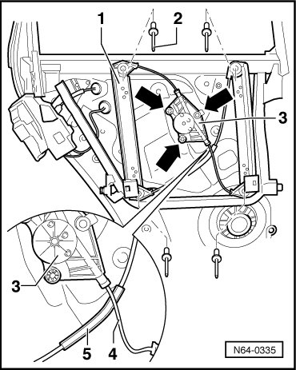

Rear Window Regulator
Rear Door Window
Window Regulator
Removing
- Remove rear door trim..

- Remove the door window. Refer to --> [ Door Window ]. Rear Door Windows
- Drill out the 4 pop rivets - 2 - on the window regulator - 1 -.
- Pry crank mechanism - 3 - out of the three locking tabs - arrows - in assembly carrier.
- Remove window regulator - 1 - from window frame.
Installation
- When installing window regulator - 1 -, make sure that jacketed release - 5 - lies between window frame and unjacketed release - 4 -.
Then, continue in reverse order of removal.
• A function test must be performed before door trim is installed.